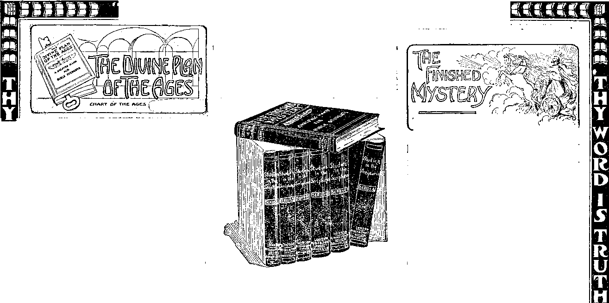

BROOKLYN. N. Y. '
Vol. IX
No. 10
Sin's Small^eginnings
Suggestions; Craving; Desire; Yielding;
A bsorpiion; Destruction.
Text:—"Man is tempted when he is drawn away of his own desires and entired. Then* when desire has conceived it brngeth forth sin; and sin* -when it is finished* bringeth forth death."—James 1:14, ig.
Tn proportion to our intelligence we all know that sin abounds in the world; and more than this, that there are tendencies toward sin in our own flesh. The Scriptural declaration is, “I was horn in sin and ^hapen in iniquity, and. in sin did my mother conceive me” (Psalm li, 5). The explanation of*these conditions is found only in the Bible, which tells us that the beginning of Ein was in Eden, and that its painful influence has descended from parent to child until now, and that there was hut one complete remedy for it, which is beyond our power, but provided for us by our Creator through his glorious Son, who redeemed us.
The Bible is God’s message to all those who are desirous of learning the Divine standard and choosing and fighting a good fight against the wrong, against sin wherever found; but especially against sin and weakness toward sin in ourselves. The more truly we discern the true philosophies for sin and the Divine remedy, the better we are prepared to resist it—forewarned we are forearmed.
However it may be explained, the fact remains that the world of mankind, heathen and civilized, realizing ein, feels conscience-stricken and anticipates punishment of some kind for violation of recognized laws and principles of our being. Ignorance, superstition, mental unbalance and theory, supported by priestcraft, have left mankind, heathen and civilized, into a fear of an eternity of torture as a punishment for sins. This the Apostle calls “Doctrines of demons” (I Timothy iv, 1). And no doubt the demons were responsible in some measure for the deduction of this doctrine of eternal torment; because fear is one of the most powerful influences they can bring to bear upon fallen humanity as they seek to captivate them to sin. Those who have had much to do with Spiritism (thinking that they were communicating with their dead friends, but really fellow-shiping with fallen angels, called demons in the Scriptures, tell us that at the beginning these “lying spirits” gained control of their wills by telling them that they should pray much, even while presenting to them alluring, sinful suggestions (I Timothy iv, 1). As a later step they tell them that everything is glorious and everybody happy “in the spirit land,” and i that sins of the present life are unimportant matters. Later on they prick their subjects’ conscience and work upon their fears and tell them that their case is hopeless and that they will soon have them fully in their power and torment them forever. With despair come utter abandonment and a willingness to treat with the “evil spirits.” This is sometimes followed by obsession and not infrequently reason is entirely dethroned and the victim becomes an inmate of an asylum.
The safeguard against all of these delusions and misrepresentations is found in a correct understanding of God’s Word—the Bible. In proportion as its teachings are understood and followed the mind is relieved of those “doctrines of demons” and given a rational understanding 'of what sin is and of what its real penalty consists. Obedience to its instructions brings proportionate measures of harmony with God and righteousness and results in love, joy, peace and a holy spirit or disposition.
Many experience great difficulty in ridding their minds of the “doctrines of demons”—that the wages of sin is eternal torment. They find it difficult to believe the Truth on the subject, which the Scriptures present, namely, that “The wages of sin is death; but the Gift of God is eternal life, through Jesus Christ our Lord” (Romans vi, 23). God’s proposition is that all sinners against his just laws, after full opportunity, shall be “utterly destroyed” (Thessalonians I, 9; Acts iii, 23). The power of eternal life resides in God; and he assures us that he will not give it to any except those who come into harmony with him. Eternal life has not been thrust upon our race. It is entirely contrary to the Scriptures to assert that man must live somewhere to all eternity, either in joy or anguish. The Scriptures assure us to the contrary of this—“All the wicked will he destroy.”
Our Lord declares that God is able to destroy both soul and body in Gehenna. He who alone has the power of eternal life has made no provision whereby sinners can obtain it and thus injure themselves and discredit the Divine government to all eternity. The gift of God is eternal life, and that gift will be bestowed only upon those who demonstrate a heart desire in harmony with God and acceptance of his provisions for their recovery from sin and death through his Appointed Way—Jesus Christ the Righteous. Thus we read, “He that believeth on the Son hath everlasting life; and he that believeth not the Son, shall not see life; but “THE WRATH OF GOD ABIDETH ON HIM” (John iii, 36).
The experience of our first parents well illustrates the lesson of our text. Mother Eve’s desire for knowledge should have confined itself to the Divine limitations; but she permitted it to wander disloyally. Evidently she turned over in her mind how wonderful must be the wisdom of God, and how she would like to possess as much as the serpent suggested she might have, if she would but disobey God and eat the forbidden fruit. We can imagine that she had qualms of conscience—that she hesitated to disobey. But to even stop to consider the pleasures, the advantages, the desirability of transgression was to leave her mind open to a fresh assault. The serpent’s next move was to suggest to her a reason why her Creator had forbidden the eating of the fruit, namely, that God knew that this would make them wise as himself, and that he did not wish for equals in knowledge, but desired to keep them in a condition of mental slavery through ignorance. Such a suggestion should have been spurned by Eve, and was, no doubt, rejected at first. No doubt she brought forth arguments to prove the merciful kindnesses and generosity of the Creator and that such an evil, selfish and ignoble spirit as the serpent suggested could not possibly belong to her Creator. But the wrong was in giving the least countenance to these suggestions of disobedience. They should have been promptly set aside. Stopping to expostulate or reason is merely opening the door for further beguilement. In the language of our text, she was “drawn away by her own desire and vras enticed;” then, when desire had conceived, the sinful act of eating the forbidden fruit resulted.
How does desire conceive? We answer, The mind entertains the desire, -warms it, vitalizes it, reflects upon what advantages or pleasures would result; enters into and enjoys those forbidden pleasures mentally. Thus Mother Eve reflected that no doubt the forbidden fruit was specially delicious to the palate, luscious; more than this, that the enlightenment of mind would bring to her vistas of thought far beyond anything she and Adam had ever previously imagined. Thus her desire for knowledge conceived and gradually, perhaps in moments, perhaps in hours, perhaps in days, developed more and more the thought of the joys and pleasures to result from the act of disobedience—until practically the whole of life was absorbed in this one desire, and everything else of her glorious and proper blessings on every hand was practically forgotten and ignored. Finally the irresistible moment came. She took the fruit. She ate it; sin was born, and the wage of death would follow in due course.
The main thing to be noticed is that the admission of evil desire into our hearts, into our wills, is the beginning of sin—the conception of sin. After the conception it is only a matter of time until it shall be born, unless in some manner that sinful desire be quenched, be killed. Even then it will be with serious consequences that the wrongly conceived sin will be gotten rid of. The lesson is, as the Apostle suggests in the text, the keeping of our hearts, our minds, so the desires shall not conceive therein. This means a loyalty to God and to the truth and to righteousness, about which the world in general knows little. It means that many kinds of desires and ambitions may be begotten in the heart and lead on to one kind or another kind of sinful development. Let us then hearken to the Lord, “Keep thy heart with all diligence; for out of it are the issues of life” (Proverbs iv, 23).
Eternal life or eternal death is the issue, not eternal happiness or eternal misery. True, under God’s provision, all who get eternal life will thereby get eternal happiness; but all who fail to get the eternal life or happiness in God’s provision will get eternal death, the Second Death, utter extinction. As St. Peter declares, they shall be “as brute beasts, made to be taken and destroyed” (II Peter ii, 12). And St. Paul says, “They shall be punished with everlasting destruction from the presence of the Lord”—not with everlasting torment (II Thessalonians i, 9),
We have seen how sin entered, and that its wage or penalty of Divine decree is death—extinction. And we have seen that mental, moral and physical imperfections are merely elements of our dying process. If this were all that the Bible had to tell us* it would be valueless to us, for why philosophize over a fact if it could not in any sense or degree be avoided? Ii! there were no hope, as the Apostle suggests, we might as well eat, drink and be merry and make no attempt specially to strive against sin, and thus to bring ourselves into conflict with the weaknesses of our own natures and our evil environment. But* as the Scriptures declare, “There 13 forgiveness with thee, that thou may-est be feared” (Psalm exxx, 4). Tha very fact that God has provided the forgiveness and made possible an escape from the original death sentence and return to his favor—eternal life—► makes life worth living and puts & new ambition, a new hope, a new energy into all those who come to an understanding of it.
If we were dealing with fallen men like ourselves instead of with God* we might say that some men would change their word and others would not. But when we think of the unchangeable God we feel convinced that the sentence he once pronounced must stand. The great Supreme Judge of the Universe, in the findings of hid own court, will not retract his just sentence, “Dying, thou shalt die.’* Hence we would not be inclined to expect eternal life from him who declares against us as a race that “the wages of sin is death.”
That philosophy once seen is convincing to the last degree. Briefly! stated, it is that “By one man sin entered into the world, and death byf sin; and so death passed upon all men* for that all have sinned;” because all except the first man were sinners by heredity (Romans v, 12). In other words, the sentence of death was pronounced only against Father Adam. Everybody else who dies merely; shares in his sentence under the natural laws of heredity. Then God condescendingly explains to us the philosophy of how that one man’s sins being met, the merit can be made applicable to all of his posterity, so that the death of one righteous man could satisfy the claims of justice against the race as a whole.
But we inquire, where could the one man be found who would be willing to surrender his own life for that off Adam and his race? And if such % generous man could be found how* could he, as a member of the condemned race, be acceptable to justice as man’s Ransom Price? The Scripture^ again explain that no such man could be found among Adam’s race, and that therefore God so loved the worlct that he gave his Son to be our Redeemer. Then the query comes, Would it be just for God to give his Son? And the answer is Scripturally given, that
Luke 23:43.—This greatly misunderstood text explained in a recent issue of The Bible Students Monthly.
Send post card for free sample.
THE BIBLE STUDENTS MOmf
I. B. S. A.. Publisher.
IB, 15, 17 Hicks St., Brooklyn, N. Y. Monthly—12c. a year. Single copies, 1c.
An Independent, Unsectarian Religious Newspaper, Specially Devoted to the Forwarding of the Laymen’s Home Missionary Movement for the Giory of God and Good of Humanity.
Ministers of the I. B. S. A. render their services at funerals free of charge. They also invite correspondence from those desiring Christian counsel
He set before his Son a great joy, a high reward; and that the Son, fully in accord with his Father, delighted to do his-wi’’—“‘For the joy tnat was set before him, endured the cross, despising the shame” (Hebrews xii, 2). We are assured that the reward for this great transaction is a great one. The Apostle, after describing how our Lord, our Redeemer, first left the glory of the heavenly estate and humbled himself to take the human nature and was then found obedient unto death, even the death of the cross, then adds, ■“Wherefore, Ged also hath highly exalted him, and given him a name which is above every name; that at the name of Jesus every knee should bow, of things in heaven, and things in earth, and things under the earth; and that every tongue should confess that Jesus Christ, is Lord, to the glory of God the Father” (Philippians ii, 9-13).
“Ye Must Be Born Again.”
As we were all born in sin as the children of Adam, all must be born again if they would become the children of God. Many have failed to notice the Scriptural teaching that out of our race God intends to produce two families of sons on different planes of being. The one class, begotten and born of the spirit, will be resurrected, be born spirit beings, like unto the angels. The other class, begotten again to human conditions, will experience resurrection (Acts iii, 19-21) favors, by which they will be recovered from sin and death conditions and ultimately come to human perfection and righteousness. These •will net be like unto the angels, but be like unto Adam in his sinless condition before the condemnation. The curse will be removed not only from these, but also from their earthly homo, which will then become as Eden, the garden of the Lord — Paradise restored. Our Lord pointed out the time of the world's regeneration, in full harmony with St. Peter’s words above cited, saying to Lis disciples, “In the regeneration ye that have followed me shall sit upon twelve thrones, judging the twelve tribes of Israel” (Matthew xix, 28). The regeneration time, or resurrection time, has not yet come; hence the apostles are net upon the thrones of Israel; but instead, the twelve tribes are still under the Gentile domination. And Gentile domination, in Scriptural language, means the times in which Satan is the Prince of this world, “Who now worketh in the hearts of the children of disobedience.”
The apostles are net to sit upon the twelve thrones of Israel until the Second Coming of our Lord and the binding of Satan and establishing of the Kingdom; hence the time of Restitution, or times of Regeneration, for mankind are yet future. When that happy day shall have fully dawned it will mean a sweet release of the world from the power of sin and death, to which all but the saintly few are now in slavery. In the Jewish order of reckoning time, night came first and day afterward. Thus the world has already been passing through a night time of darkness, ignorance, superstition and sorrow, the results of sin and death. But the redeeming merits of Jesus have provided the Millennial Day. which will soon be ushered in and chase away forever the shadows of sin and death. No wonder the poet sang,
“O, hail happy day
That speaks all sorrows ending!”
The Psalmist refers to the same glorious day, saying, “Weeping may endure for a night, but joy cometh in the morning.”
The Tree of Life in the Paradise of God.
Verity 1 say unto thee todayt Thou shalt le with me in Paradise T^—Luhe 23:4.3,
Paradise is another name for the Garden of Eden, the abode of bliss. It was lost through the sin of our first parents, but the gracious promise of our great Creator is that this condition of earthly bliss shall be're-established—not merely in a little corner of the earth, but that the whole earth shall become the Paradise of God. Heaven is God’s throne and the earth is his footstool, and he assures us, “I will make the place of my feet glorious”—“in due time.” How this will be accomplished is the Gospel message.
The Divine promise to Father Abraham, that all the families cf the earth should yet be blessed through his Seed, includes the thought of man’s full restoration to Divine favor—as before he sinned and before he fell; before Paradise was lost; before man came under the curse or sentence of death. The Jews hoped that Messiah would come and constitute their nation the earthly Kingdom of God and re-establish Paradise with Palestine as its center. They expected that under his wise ministration, using their nation as his instruments, the Divine Law would extend to all and, by bringing all people into harmony with God, would gradually bring back all to the Paradise state.
It was in full harmony with this expectation that the dying thief asked the Lord to remember him when he would come into his Kingdom, the Kingdom whose dominion would establish righteousness in the earth, and thus convert the world, under Divine favor, into the Paradise of God. Our Lord’s answer was that verily, truly, his request would be granted—the thief would yet be with him in Paradise. Paradise has not yet been established, because God’s Kingdom has not yet come to earth and it delays until a certain work for the Church shall be accomplished.
It is not the Divine intention to make cf the nation of Israel God’s Kingdom in the highest sense of that word, though it will be actively identified with the heavenly Kingdom" as its earthly representative. Ged is selecting during this Gospel Age a new nation, Spiritual Israel, from every nation, people, kindred and tongue. At cur Lord’s First Advent and subsequently he gathered from Israel such as were saintly and ready for the Kingdom; and since then he has been taking cut from other nations enough to complete the foreordained number of the “elect” Church. These will constitute the Kingdom perse, and it cannot be set up or established in power until this election or selection shall have been completed and the “elect” “changed” or glorified on the spiritual plane by the power of the First Resurrection.
Paradise, or the Garden of the Lord, not only represents that earthly condition which will be restored for the benefit and blessing cf the natural man, as the reward of his obedience to the rules of Emmanuel’s Kingdom during the Millennial Age, but it also applies in a figurative sense - to the glorious and heavenly position which God has in reservation for the Church. Thus we read in the Book of Revelation that the Lord has promised to the overcomers of the Church that “To him that overcometh will I give to eat of the tree cf life which is in the midst of the paradise of God” (Revelation ii, 7).
The World’s Regeneration.
This is a grandly beautiful and symbolic message and promise assuring us of the happiness and heavenly bliss in eternal life conditions of all who are faithful followers of Christ in the present age—walking in Jesus’ footsteps in the “narrow way.** The Book of Revelation pictures the history of this Gospel Age down into the Millennial Age and shows us Paradise re-established with the Heavenly City, the glorified Church, as its center or capital. The River of Life is pictured as flowing from under the Throne. On either bank of its crystal waters of Truth and grace grow the trees of Life, after the manner of Eden of old. The future state will all be Paradise. The completeness of blessedness Will first be manifested in the Church on the spiritual plane, and, secondly, it will be manifested in the Ancient Worthies on the earthly plane—perfected Abraham, Isaac and Jacob and all the holy prophets, the earthly representatives of the heavenly Kingdom. Gradually the paradisaical condition shall fill the whole earth. The wilderness shall blossom as the rose and the solitary places shall be glad and streams shall break forth in the deserts, as we read in Isaiah xxxv. The morally lame shall learn to walk ih the paths of righteousness. Yea, they shall leap for joy, as they come to a knowledge Of the grace and goodness of God. The world’s eyes of understanding shall be Opened and their deaf ears shall be unstopped, that they may hear and see the goodness and mercy, the justice and the love of our God. The willing and obedient shall eat the good of the land, but the evil doers shall be cut off in the Second Death. Gradually the boundaries will be spread abroad until, in the end of the Millennium, they shall include the whole earth. Gradually the numbers enjoying Paradise shall increase until, in the end of the Millennium, the entire race of Adam shall experience this blessed privilege of God’s love and mercy through Christ.
St. Paul, like John the Revelator, was caught also to Paradise in vision and saw the glorious things of the future age, which he was not permitted to explain to us, because the due time had not yet come. Neither was John the Revelator permitted to reveal fully the particulars of the Paradise condition. . He could merely give us a few symbolical hints of suggestions respecting the glories of Paradise restored.
Redemption Through Christ.
We have already noticed that Paradise was lost by sin through disobedience of the heavenly command. Life and Eden bliss and Divine favor and fellowship were all lest to Adam and to us, his children, under the death sentence. There was no hope for any of us any more than for the brute beast, for while the latter was born to die, man, created with possibilities of life eternal, was sentenced to the loss of all. Indeed, under the demoralizing influences of sin and death we find many of the human family really more degraded than the brute creation and apparently less worthy of Divine favor.. But God, rich in mercy, in the great love wherewith he loves us, provided for mankind a recovery from the sentence of sin and death, while he has made no provision for future life for the brute creation. ‘
God’s provision for man’s recovery from the sentence of death is the story of the “Cross of Christ.” Because a man had sinned the redeemer must be a man. Because the penalty was human death, the perfect man must die for the sinner’s release from the death sentence—to uplift the willing out of sin and death conditions up, up to fellowship with God and eternal lifA Be* cause the race of Adam inherited nab-urally his mental, moral and physical defects, therefore none of his posterity was worthy of eternal life. But; in thd Divine arrangement, as Adam had involved all of his children and theif Paradise home in the wreck of' simand death, so a redemption has beemeffect* ed through Christ.
| “WHERE ARE THE DEAD?” I
The interest aroused and the great demand for copies of this sermon $|> has been remarkable. A sample copy will be mailed to any one free.
The great Work of Messiah will therefore be the restoration of the world to all that was lost in Eden and redeemed at Calvary. The work of restoration, St. Peter tells us, has been spoken of by the “mouth of all God’s holy prophets since the world began” and will be accomplished by Messiah at his Second Coming (Acta iii, 21). But the Divine Plan changes not. Sih is still objectionable to God, will always be so. And the Divine sentence is that no sinner may have eternal life; hence the offer of Divine Grace is merely that all who will may .have Divine assistance, resurrection, restoration, uplifting out of sin and death conditions to perfect conditions. But these things will be accomplished only in those who are willing and obedient. Only such Shall eat the good of the land—the fruits of Paradise (Acts iii, 23).
Furthermore it is the Divine arrangement, and a just one, that any good and noble deed of the present life works a measure of character development which will be assistful in the future lifq, enabling the faithful the sooner to mount up in the full perfection of earthly life. Correspondingly every wilful sin, every violation of conscience and principle, works a defilement and impairment of manhood, which, likewise, will have its effect in the future life in the difficulty of rising out of degradation to the heights of Divine perfection and approval and everlasting life. If all mankind could appreciate these facts what an influence it Would have in restraining, governing and developing self control and true manhood!
The Divine Program.
Does some one inquire as to why he who redeemed Adam, his Eden home, and all his race, and who proposes a restoration of all—why he has not begun this restitution work during the eighteen hundred years since the sacrifice of himself? The Scriptures answer that another feature of the Divine program is being carried out. The Lord is gathering the “elect” Church from Israel and all the nations to be Messiah’s assistants in his Kingdom and the gracious work of’ uplift—resurrect!on—restitution. This “elect” Church class first selected is in the Scriptures called “A first-fruits of God unto his creatures” (James i, 18). The world of restored humanity will be the after-fruits.
The Scriptures exhort such as in th© present time are blessed with the hearing ear to give heed to the special invitation of the elect. They exhort such as have the eye of faith to aspire to the crown of glory and joint-heirship that is now being tendered to a. very select class. He that hath an ear let him hear. He that hath an eye let him see. So many of us as have been blessed of the Lord with the ear of faith, the eye of faith, let us rejoice therein with the blessed opportunity. Let us seek indeed to make our calling and election sure to this heavenly es-_ tate of glory, honor and immortality and joint-heirship with our Lord, the King of kings and Lord of lords!
Both of the thieves, crucified with our Lord, lost their right to the original Eden or Paradise of God through father Adam’s disobedience, as did we all. Both of those thieves were “born th sin and shapen In Iniquity, in sin did their mothers conceive them,” as with us all. Both of those thieves were redeemed by the precious blood of Christ, as were we all; for “Christ Je&us, by the grace of God, tasted death for every man;” “lie is the prbpitiation for our sins [the Church’s sins], and not for ours only, but alsd fdi* the sins of the whole world.” Thus, as we have seen, the Redeemer 4&s made provision for both of those thieves, as well as for all of us—all of Adam’s race—to be recovered from the sin and death conditions of the fall and to be restored to Paradise. The Cburch now called during this Gospel Age may reach the spiritual Paradise of highest condition of holiness and h&ppiness. The two thieves and the refill ainder of mankind will have their opportunity during the Millennium. Their opportunity -will be for a return td earthly life and perfection and hap-plhess and an earthly Eden—world wide. How much grander a work will tliiis result from our Lori’s death than we had previously supposed!
Let none suppose, however, that those two thieves will enter Paradise on the same footing. While both were guilty of robbery, they evidently were dissimilar in the condition of their hearts. The one was hardened, as evidenced by the fact that he could speak thus rtidely to the Redeemer, whose face bespoke gentleness, purity and innocence of crime. Such cruelty implied a deep degradation of mind—implied that he whs sin-hardened. And yet we must remember that others of the multitude standing by used similarly cruel language. And we must remember that there are many thieves who are not caught and many, perhaps, as morally Wrong, as evilly intent! oned, who, for fbar of the consequences, never committed the wrongs. We can even suppose that some of the scribes and Pharisees and Doctors of Divinity of those days were in God’s sight much worse than the impenitent thief—murderers at heart and in deed. Yet of the latter St. Peter declares, “I wot, brethren, that in ignorance ye did it, as did also your rulers,” when you crucified the Lord of glory.
An Earthly Paradise.
Ignorance and superstition and inherited depravity all bore down upon the impenitent thief to a degree which we are not capable of properly estimating. The Lord will judge him— both thieves—all mankind. The penitent JhieDwill unquestionably have a two-fold blessing. First he will be blessed because of his penitent attitude of mind; secondly, because of his faithfulness in expressing that penitence and mercy to our Lord in his distress. Our Lord declared that even a cup of cold water given to the Last of his disciples wiil have its reward. Surely it will be in harmony, then, that the penitent thief will have a reward for his. defence of the Master.
The penitent thief manifested not only sympathy but honesty and it is entirely in keeping with the general teachings of our Lord’s Word that, the honest-hearted and the merciful have special blessings. Those blessings cannot reach them in the grave and it is not always that they reach them in the present life. Virtue is not always its own reward. Our Lord declares the Truth on the subject, assuring us that such shall be “recompensed in the resurrection of the just.” That is to say, when the just, the justified, the Church, shall be resurrected in the First Resurrection and when then the heavenly Kingdom shall be established amongst men and the general awakening of the world from the sleep of death shall gradually follow—then every good and every evil word, every good and every evil act, w’ill be recompensed—in Paradise. Let us be glad and rejoice that the Divine arrangement is an earthly Paradise, possible to every member of the race, and a heavenly Paradise, possible to every member of the spirit-begotten Church) and that the alternative of Paradise is not eternal torment, but everlasting destruction—the Second Death,
SAMPLE COPY FREE.
Zbe Coming Ikingbom
Text:—a Thfy kingdom come, thy will be done oh earth as it is dbhe in he aven. ”—Matthew 6:10
The words of bur text have been repeated by Christian. people of all nationalities for cehturihs. You recognize them as a portion Of What is generally termed the Lord’s prayer, given to the Lord’s followers as a rhodel in answer to the request of the Apostles, “Lord, teach us to pray.” The fact that our Lord instructs us to pray for his Kingdom to come, implies several things. (1) That it was not already here. (2) That it is part of the divine provision that in due time the Dominion of the Highest shall be established among men. (3) That this is one of the chief desideratums for God’s people and for humanity.
Our Lord’s Parables.
It surely has not escaped the attention of every Bible student that nearly all of our Lord's parables are more or less closely identified wTith this Kingdom thought. The majority of them open with such expressions as, “The Kingdom of heaven is likened unto,” etc. If we keep in memory that it is a Kingdom of priests that is to bo established, otherwise called a Royal Priesthood, all will be plain. Our Lord Jesus, after he had paid our ransom price, after he died the just for the unjust, as our .sacrificing High Priest ascended up on. high to be our King; to-be a Priest upon his throne. And similarly he is now calling fcr an underpriesthood, willing to follow his example of self-sacrifice in the present life. These in due time he will glorify with himself, giving them a share in that Royal Priesthood as Priests upon the throne of the Millennial Kingdom. Thus he promised, “To him that over-cometh will I grant to sit with me in my throne, even as I overcame, and am sot down with my Father in his throne” (Revelation iii, 22).
If all Christian people could realize that their “high calling” of God is i.ot a calling away from eternal torment, but a calling, or invitation, to association with Christ in his great Kingdom, which shall ultimately rule the world, “under the vzhole heavens,” they would read the Bible with a fresh interest; it would soon be to them a new book.
Glance at some of the parables. Note how they give snap-shot pictures of the Church’s experiences, not only In the future, but especially in the present time of development and preparation and testing—picturing the trying experiences necessary for attaining the Kingdom. In other words, the Church, while on trial, is the embryo Kingdom, the probationary Kingdom class. This is the enlisting time, the testing time, the proving time, and none will be accounted worthy to share in the actual glories and privileges of the coming “Kingdom of Ged’s dear Son’’ except those who now demonstrate not only loyalty but loving devotion to the Lord, to his Truth, to all who are his —to Ike extent of laying down their lives for the Truth and for the brethren.
Note the parable of the sower, and that the message sown is the “good seed of the Kingdom.” Note that the ripe wheat developed from that sowing is denominated the children of the Kingdom. Note that the gathering of the wheat into the barn—by the resurrection change, to the heavenly state —is still associated with the thought of the Kingdom in the words, “Then shall the righteous shine forth as the sun in the Kingdom of their Father.” Now they are exhorted to shine forth their light as tallow-candles, that they may “show forth the praises of him who called them out of darkness into his marvelous light.” If unfaithful in shining forth the light under the present conditions of prevalent darkness, they, will not be esteemed worthy of a place with tne glorified faithful in the Kingdom which will shine forth as the sun. —
Note in the parable bf thb het cast into the sea, which gathered fish of various kinds, that the net represented the hominal church of this present time, which in due time is drawn ashore, the fishes caught separated, and those suitable for the Kingdom are represented as gathered in baskets, while the unsuitable are represented as being cast back into the sea.
Notice the parable of the pearl of great price, which represented the Kingdom blessings and privileges, and could be obtained only by the selling of all that was possessed; that thus the Lord’s followers who desire a share in his Kingdom are to reckon that no sacrifice is too great to make to attain that blessing—indeed, they are to know that the Kingdom can be attained at no less cost than the surrender of all their earthly hopes and aims.
Note the parable of the pounds and talents, which represented our Lord’s departure to heaven for inveSture in authority to be the great King of earth, the sovereign bt the Millennial Kingdom to be established at his return* Note the giving of the pounds and the talents to his faithful servants to be used in his interest in his absence. 'Note that on his return he first reckoned with these, and rewarded the faithful, saying to one, Have thou dominion Over two cities; to another, Have thou dominion over five cities; to another, Have thou dominion over ten cities. Note that this giving of the Dominion to his faithful servants signified their sharing with him in his Kingdom at the time of its establishment at his second coming.
The Kingdom In Glory.
Note the parable of the sheep and the goats, which pictures the Millennial Kingdom in full operation. It opens with the announcement, “When the Son of Man shall come in his glory, and all the holy angels with him, then shall he sit upon the throne of his glory. And before him shall be gathered all nations; and he shall separate them one from another, as a shepherd divideth his sheep from the goats” (Matthew xxv, 31). This is unquestionably a picture of the Millennial reign of Christ, and his dealing wTith the world. When that time shall come, the elect Church, the Bride of Christ, will be with him in the throne, sharing his glory, and sharing in the work of judging the wTcrld; as said St. Paul, “Do ye not know that the saints shall judge the world?” (I Corinthians vi, 2.)
The prophecies of the Old Testament Scriptures abound in testimonies respecting the blessing which will come to the world during the reign of Messiah’s Kingdom. The Jews had every reason to expect that God had honored their nation as the seed of Abraham with especial relationship to his Kingdom—that as his holy nation and people Israel should be the channel for the dispensing of the divine blessings to all the families of the earth. Nor will that expectation prove false. ’ The Lord has not changed his plan; he has merely introduced first of all another feature of his plan not previously revealed, styled by the Apostle Paul “the mystery of God.” This mystery is, that before Israel can be God’s earthly agents for dispensing his blessings to mankind in general, to every nation, people, kindred and tongue, God will first select a special class, a “Little Flock,” a “Royal Priesthood”—tfie Church, the Bride, the members of the Body of Christ as a Spiritual Israel. When this Kingdom class shall have been fully selected, and the last member shall have been glorified with Christ beyond the vail on the spirit plane of existence, then divine favor will return to natural Israel.
We are not to understand that everyone_who_ hast Abrahamic_blood in
_________________'___3 his veins will on that account be permitted a special service for the Lord during the Millennium as ah eartlily representative of the spiritual Empire. Nay. they are not all Israelites who are of the seed of Abraham. But the Lord shows us through the Apqslle that prior to the comiilg of Christ 6oa had already selected Abraham. Isaac and Jacob and all the prophets hfii other faithful ones enumerated by St-Paul in Hebrews 11th chapter. Theses having demonstrated their faith and willing obedience to do the Lord’s will, have this testimony, “thdt they pleased God.” These Ancient Worthies of thier earthly seed of Abraham are already prepared Of the Lord to be-the earthly representatives of his Spiritual Kingdom. In due time, after the glorification of the Church in “the first resurrection,” these will come forth not oh the spirit plane, but as perfect human beings. Through these the Lord’s blessings and instructions to mankind will be disseminated. They will constitute the earthly Jerusalem, as the Church will constitute the heavenly Jerusalem, Mount Zion; as W’e read, “The Law shall go forth from Mt. Zion, and the Word of the Lord from Jerusalem” (Micah iv. 2) for the blessing of all nations, for their instruction in righteousness, for their assistance in the highway of holiness, that thby may gain at its farther end the great reward of life eternal.
It is but reasonable to expect that with the establishment of that kingdom for which Israel has so long waited and hoped, its mercies dispensed through these Ancient Worthies will first appeal to the nation of Israel, and subsequently to all people of all nations, as they shall come to the faith of Abraham and receive the instruction of the Kingdom. Thus it is written, “And many nations shall go and say, Come, and let us go up to the mountain of the Lord, and to the house of the God of Jacob; and he will teach us of his ways, and we will walk in his paths” (Micah iv, 2).
The Gospel Age Parenthetic.
It may help some to think of this* Gospel Age as a parenthesis. God’s dealings with the Jews in the flesh were interrupted by the development of the spiritual seed of Abraham— Christ and the Church (Galatians iii, 29). As soon as this work of developing Spiritual Israel shall be completed,; and the “little flock” be exalted to glory on the spirit plane by taeir resurrection change, then the parenthesis 'will be ended, and divine favor will resume its operation with natural Israel, and through Israel to ail nations^ for their blessing.
Note how distinctly this matter is Set forth in Romans 11th chapter^ There the Apostle notes the rejection of natural Israel, and how it was foretold by the Prophets Isaiah and David —that their table of divine mercies and promises would become a trap and a snare to them, making them proud and arrogant instead of humble, and thus showing the unfitness of the majority of them fcr a share with Messiah in the spiritual part of the Kingdom. The Apostle pictures these in the olive tree, whose roots represented the Abrahamic Covenant, and whose branches represented the Jews. He points out that nearly all the branches were broken off—because of unbelief—and that the unbelief was because of an improper condition of heart. He says that those Jews who received Jesus were the branches not broken offfc and that God during thin
Cc~ ■
This greatly misunderstood jparable made plain
■■■■
ttge nas been choosing out from amongst the Gentiles such as would be suitable substitutes for the broken off Jewish branches, so that eventually the'olive tree would have the full number of branches definitely foreknown and intended—a few of them natural branches (including the Apostles and all the Jews who received Christ in sincerity) and the remainder of that spiritual olive tree, branches grafted in from amongst the Gentiles. The tree as a whole, then, represents spiritual Israel, the “one new man” mentioned by the Apostle, whose head is Christ, and whose members are partly Jewish and partly Gentile, transformed, renewed (Ephesians ii, 15).
Ignorant of This Mystery.
Continuing his discussion of the subject, in this same chapter, St. Paul Bays, “I would not, brethren, that ye should be ignorant of this mystery, lest ye be wise in your own conceit; that blindness in part is happened to Israel, until the fullness of the Gentiles be come in. And so all Israel shall be saved; as it is written, “There shall come out of Zion the Deliverer.”
Let us not make the mistake of supposing the Apostle meant that all Israel will be saved to heavenly glory, or to eternal life. Israel will be eared from the blindness and rejection of God which came on them as a nation when they rejected Messiah. The great Deliverer who will bless them Will be composed of Messiah, the Head, and the Church, his Body—composed of overcomers, some of whom once were Jews and some of whom once were Gentiles. This great Deliverer who comes out of Zion is the’ spiritual Son of Zion, the Messiah, the King, the Royal Priest, the Judge, the Mediator of the New Covenant. The first blessings of his Millennial Kingdom will be upon natural Israel, from whom the Kingdom was taken away, and to whom the earthly phase of the Kingdom will be restored in the hands of the Ancient Worthies, who will be the earthly representatives of the heavenly Kingdom. The Kingdom itself will be invisible to men, but its earthly representatives will be seen and known to all mankind; as it is written, •‘Ye shall see Abraham, and Isaac, and Jacob, and all the Prophets, in the Kingdom of God” (Luke xiii, 28).
He Must Reign Until—
JThe object of our Lord’s reign is
distinctly set forth in the 'Scripture^. Also its length of duration. He is to bind Satan, “the prince of this world,” to overthrow entirely his dominion of sin, ignorance, superstition, as they 1 now control the human family, bought w?th the precious blood. His Kingdom will cause the knowledge of the Lord Jehovah to fill the whole earth, that every creature may receive a blessing through that knowledge.
We are distinctly told that this Millennial Kingdom will not last forever, but for a definite period of time—for a thousand years. The Scriptures clearly intimate that the work of havoc caused by the reign of Sin and Death during six^thousand years—from Adam to the second coming of Christ —will be fully offset by the one thousand years’ reign of the Kingdom of righteousness. How stimulating the thought! How it must thrill the hearts of all who love God and their fellowmen, all who grieve to see the Divine will and standards violated, all who love righteousness and hate iniquity, and realizing that the dying, and the crying, and the degradation, and the sin, which prevail throughout the whole world, are enemies, contrary to the Lord’s Kingdom.
St. Paul assures us that in due time God will give this Kingdom to the Christ—divine power shall be established in the Millennial Kingdom, and at the end of that Millennial reign Christ will deliver up the Kingdom to God, even the Father—the entire work and purpose ol the reign being then fully accomplished. He tells us that meantime Christ “must reign until he shall have put down all insubordination”—everything contrary to the divine will, everything sinful; until he shall have uplifted mankind out of the miry clay and the horrible pit of sin and death l
This is the thought brought before us by St. Peter saying, “Times of refreshing shall come from the presence of the Lord, and he shall send Jesus Christ, which before was preached unto you, whom the heavens must retain until the times of restitution of all things which God hath spoken by the mouth of all his holy prophets since the world began” (Acts iii, 19-21). These times of restitution are the Kingdom times, the times of resurrection, the times of human uplifting from sin and death conditions to life, and joy, and peace, for all who will receive the Lord’s favors upon his terms.
The Church and the World walked far apart
On tne changing shores of time;
The World was sing.ng a giddy song, \
And the Church a hymn sublime.
“Come, give me joar liana,” said the merry World, :
“And walk with me this way”;
But the good Church hid her snowy hands
And solemnly answered “Nay,
I will not give you my hand at all, And I will not walk with you;
Your way is the way that leads to death;
To my Lord I must be true.”
“Nay, walk w:th me but a little space,”
tt Said the World with a kindly air;
The road I walk is a pleasant road, And the. sun shines always there;
Your path is.thorny and rough and rude, But mire is broad and plain;
My way is paved with flowers and dews, II
And yours with tears and pain;
The sky to me is always blue,
No want, no toil I know;
The sky above you is always dark, Your lot is a lot of woe;
The way you walk is a narrow way, But mine is amply wide.”
"Your is t0° P]ain,” said the proud old World, 1 11 build you one like mine;
Carpets of Brussels and curtains of lace, And furniture ever so fine.”
So he built her a costly and beautiful house;
Most splendid it was to behold;
Her sons and her beautiful daughters dwelt there Gleaming m purple and gold;
Rich fairs and shows in the halls were held, Ana the World and his children were there.
Laughter and music and feasting were heard In t"ie P^ace that was meant for prayer.
There were cushioned pews for the rich and gayf
To Slti *n their pomP and pride;
While the poor, who were clad in shabby array, But seldom came inside.
"You give too much to the poor,” said the World.
Far more than vou ought to do;
y are in need of shelter and food,
Go. take your money and buy rich robes,
Buy horses and carriages fine, .
Buy pearls and jewels and dainty food;
Buv the rarest ard costliest wine;
My children dote on all the=o things, And if you their love would win.
You must do as thev do, and walk in the ways That they are walking in.”
Then the Church held fast the strings of her purse,
Ard modestly lowered her head.
And simpered, “No doubt you are right, sir;
Henceforth I will do as you’ve said.”
Then the sons of the World and the sons of the Church Walked closelv. hand and heart,
And onlv the Master, who knoweth all, Could tell the two apart.
Then the Church sat down at her ease and said, I am rich and mv goods are increased,
I have need of nothing or aught to do, I
^aue’h, ard dance, and feast.” I
The sly World heard, and he laughed in his sleeve.
And mocking said aside—
The Church is fallen, the beautiful Church, And her shame is her boast and pride.”
The angel drew near to the mercy-seat,
-A nd whispered Jn sighs her name,
1 hen11 the loudj anthems of ran+ure were hushed.
And heads were covered with shame.
And a.voice was*he,ard at last bv the Church From Him who sat on-the Throre.
T know thv? works, and how fthou hast said.
‘I am rich’; and hast not known
That thou art naked, poor and blind, And wretched before mv face;
Therefore, from my presence, I cast thee out, And blot thy name from its place.”
5ANCTIFY THEM THROUqH THY TRUTH
THE WINEPRESS OF GOD'S WRATH Q
J
EVERY CHRISTIAN SHOULD KNOW
THINGS YOU OUGHT TO KNOW AS
God has permitted evil for six thousand years for a 1 wise purpose. .
These subjects any many others of deep interest to v all of God's people are discussed fully and in language easy of comprehension in
the; satisfactory proofs that
The Bible is a Divine Revelation—reasonable and trustworthy, revealing a systematic Plan full cf Justice, Wisdom and Rove. “The Key of Knowledge” of the Scriptures, long lost is found, and gives God’s faithful people access to the “Hidden Mystery.” — Luke 11:52, Col. 1:26.
The Lord Jesus and His faithful are to be not only priests but kings, and will reign over the earth. This Kingdom is to come at Christ’s Second Advent. God’s Plan is to select and save the Church in the’ Gospel Age, and to use this Church in blessing the world in the Millennium. A “ransom for all” implies an opportunity to all for restitution. The Day of Judgment is 1,000 years long—the world’s trial day. “The narrow way” of self-sacrifice will cease with this Age.
“The highway” of righteousness will be open to all the redeemed race in the Millennium.—Isa. 35:8, 9.
“The kingdoms of this world” are but for an ordained period and must give place to the ‘ Kingdom of Heaven.”
“THE DIVINE PLAH OF THE AGES” \
(In English, German, Swedish, Dano-Norwegian, Italian, French, Greek, Hungarian, Spanish, Polish, Hollandish, F'innish, Arabic, Slovak, Roumanian, Lettish, Ukrainian, Chinese, Japanese and Korean; also Braille, for the blind).
416 PAGES—CLOTH BOUND. 50 CENTS, POSTPAID OR
Complete in Seven Handsomely Bound Volumes 9,000,000 COPIES IN CIRCULATION IN TWENTY LANGUAGES
“Greater, doubtless than the combined circulation of the writings of all the Priests and Preachers in North America.”—W. T. Ellis., in The Continent. “Intensely interesting, thoroughly logical and practical.”—Brig. Gen. W. P. Hall, U. S. Army.
Ordinary Books of the size and style of Pastor! Russell's works regularly retail in book stores at $2.50 each—seven books thus totalling $17.50.
Until the Twelve Million Mark is Reached, the Publishers have arranged to ship to any address, the entire set of seven volumes, in imported maroon cloth binding, gold embossed—together with one year’s subscription to our 16 page semi-monthy Journal, The Watch Tower—
ALL FOR $4.60 DELIVERED. ORDER TODAY.
International Bible Students Assn., Brooklyn, N. Y.
Vol. VII. “Studies in the Scriptures” Series.
[Why Revelation and Ezekiel can. now be understood.
What is “the winepress of God’s wrath.”—Rev. 14 :18-20.
How “the vine of the earth” will be crushed.
Why the Catholic and Protestant church systems constitute “Babylon.”
Why Babylon must fall.
Why the great world-war has come, and what will follow it.
Who are the “seven angels” to the churches, and the work of each.—Rev. 1 :4, 20.
[What is meant by “the Finished Mystery of God.”—Rev. 10 :7.
The meaning of the “fiery chariot” which will ! separate the true Christians (the Elijah class) from all others.—2 Kings 2 ill.
>The great reconstruction that will follow the world’s trouble, and how every seeker after righteousness may be comforted and blessed.
Every verse of Revelation, Ezekiel and Canticles made plain, and a flood of light thrown upon the entire Bible in Pastor Russell’s final legacy to the Christians of earth, entitled
“THE FINISHED MYSTERY”
608 PAGES--ILLUSTRATED--CLOTH BOUND, 60 CENTS,
POSTPAID or delivered by colporteurs.